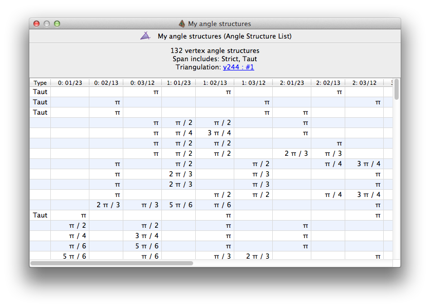
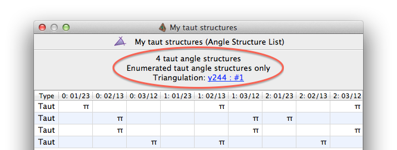
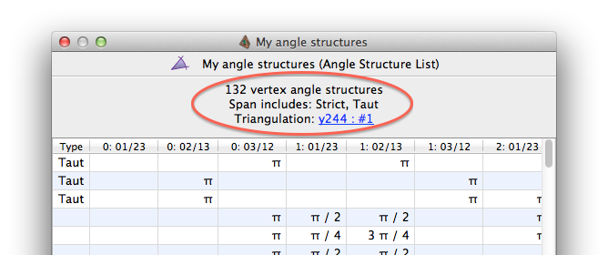

Analysis | |
| Prev | Angle Structures | Next |
When you open an angle structure list for viewing, you will see a table with all of the angle structures in your list.

Above this table is a header displaying the total number of angle structures. If you enumerated taut structures only, this will be reported in the header also:

Otherwise the header will indicate whether or not the convex span of these angle structures contains any strict and/or taut structures (these terms are defined below).

Each row of the table represents a single angle structure in this list.
The leftmost column is used to indicate special types of angle structure. Possible values include:
- Strict
Indicates a strict angle structure (all of its angles are strictly between 0 and π).
- Taut
Indicates a taut angle structure (all of its angles are equal to either 0 or π).
Here we use the Kang-Rubinstein definition of taut angle structure [KR05], which is based on the angles alone. We do not use Lackenby's definition [Lac00a], which also requires consistent coorientations on the 2-faces of the triangulation.
Note that some taut structures may be listed as veering instead (which indicates a stronger combinatorial structure).
- Veering
Indicates a veering structure. This is a taut structure with additional (and very strong) combinatorial constraints; for details see [HRST11].
Note that we use the Hodgson et al. definition of veering structure [HRST11]. This is slightly more general than Agol's original definition [Ago11], in the same sense that the Kang-Rubinstein definition of taut angle structure is slightly more general than Lackenby's. In particular, we do not require consistent coorientations on the 2-faces of the triangulation.
If an angle structure is neither strict nor taut, the leftmost cell will be left empty.
The remaining columns list the individual angles that are assigned
to edges in tetrahedra.
These columns are labelled
0:01/23, 0:02/13,
0:03/12, 1:01/23,
etc., where column
t:ab/cd
represents the angle assigned to tetrahedron
t along the edge that joins tetrahedron vertices
a and b, as
well as the (opposite) edge that joins tetrahedron vertices
c and d.
Here 0 ≤ t < n,
and a,b,c,d
are some permutation of 0,1,2,3.
| Prev | Contents | Next |
| Enumerating Angle Structures | Up | Importing and Exporting Data |